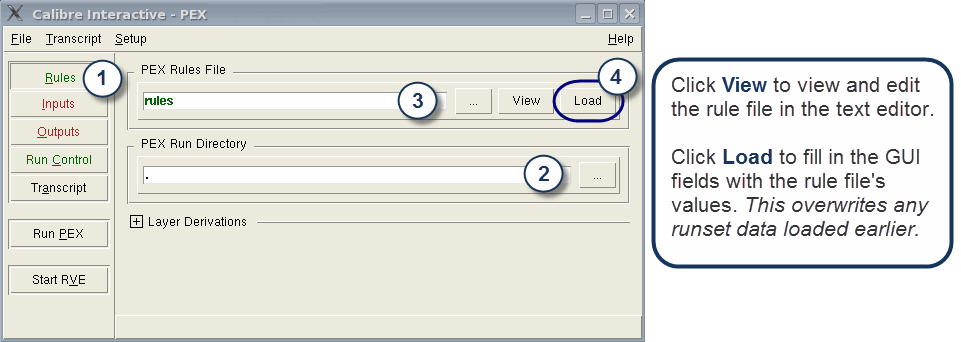

Parasitic extraction
requires a pre-defined rules file. Use this procedure to specify
and load a rule file in Calibre Interactive.
Procedure
- Click Rules.
- Specify the run directory
name. You can use the Browse (…)
button to select the run directory name from a list.
- Specify
the rule file name. You can use the Browse button to select the
rule filename from a list. You can use the View button to view or edit
the rule file.
- Click Load.
This loads GUI fields and sets GUI options based on rule file data.
Figure 1. Loading Rules
in Calibre Interactive
Tip After
you load a rule file, any information you specify in the GUI supersedes
information in your loaded rule file.